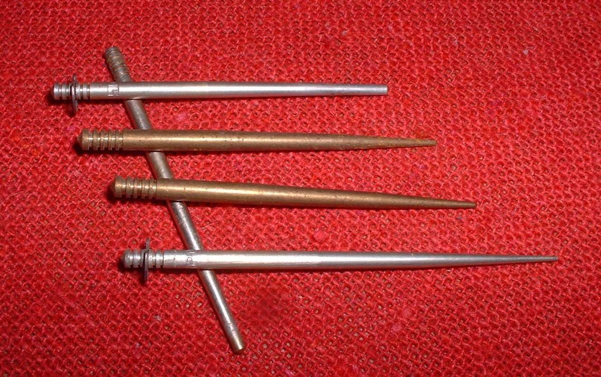
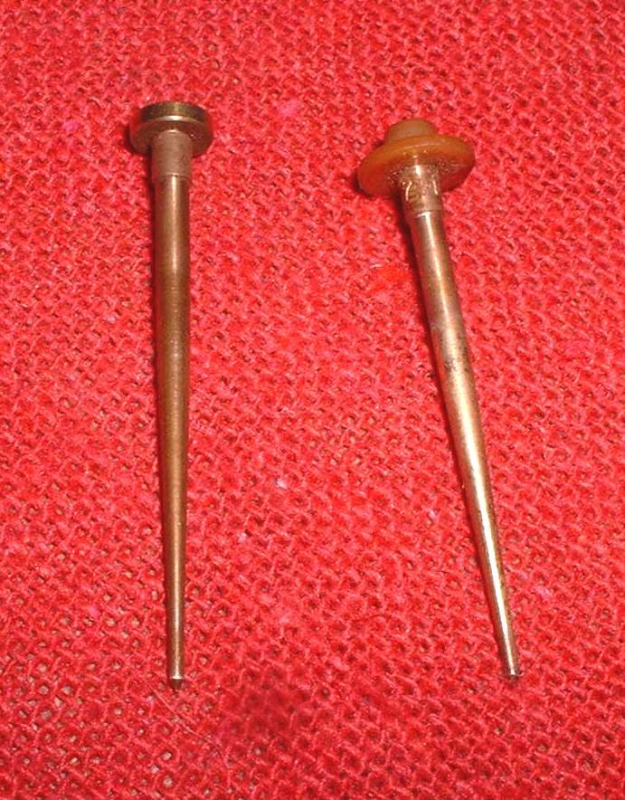
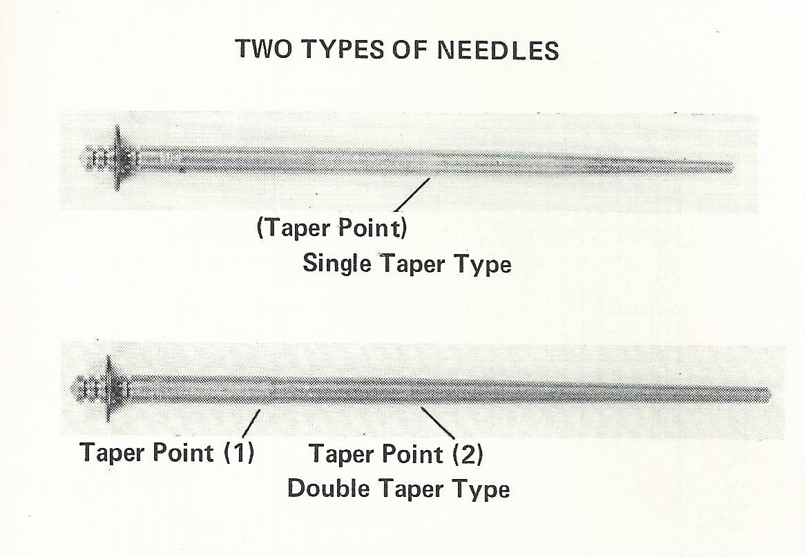
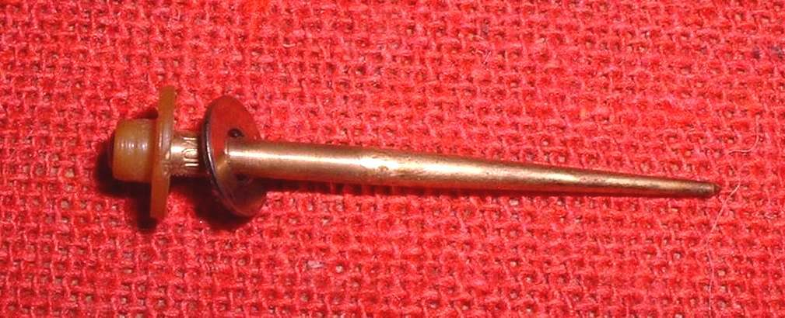
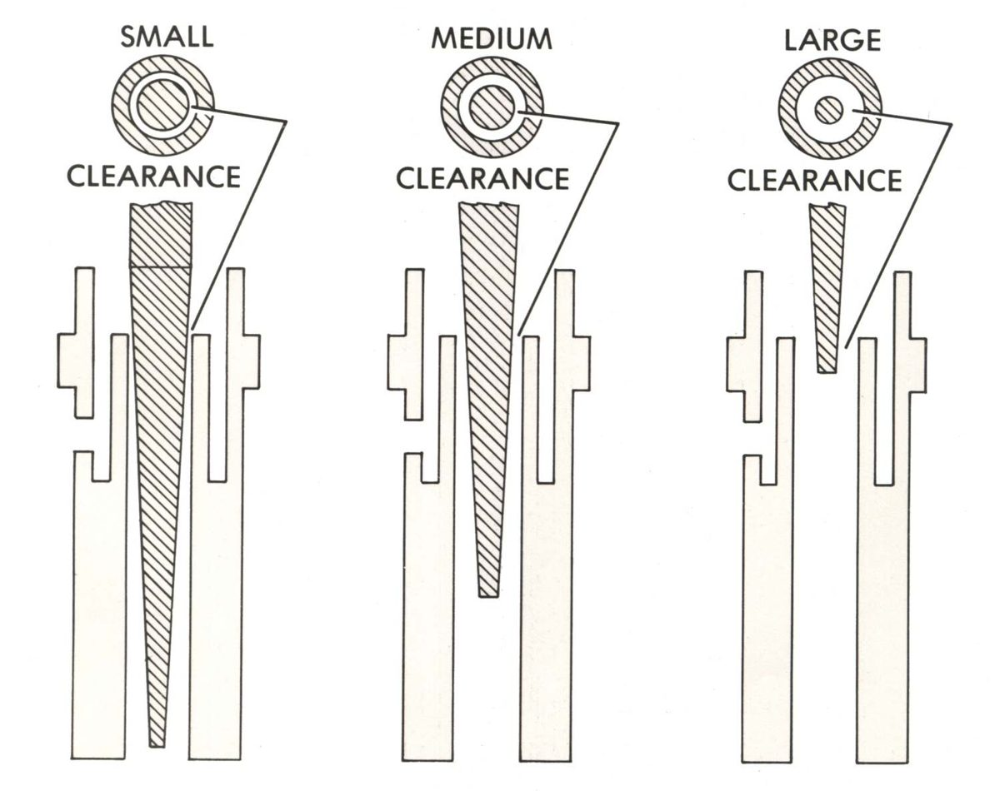
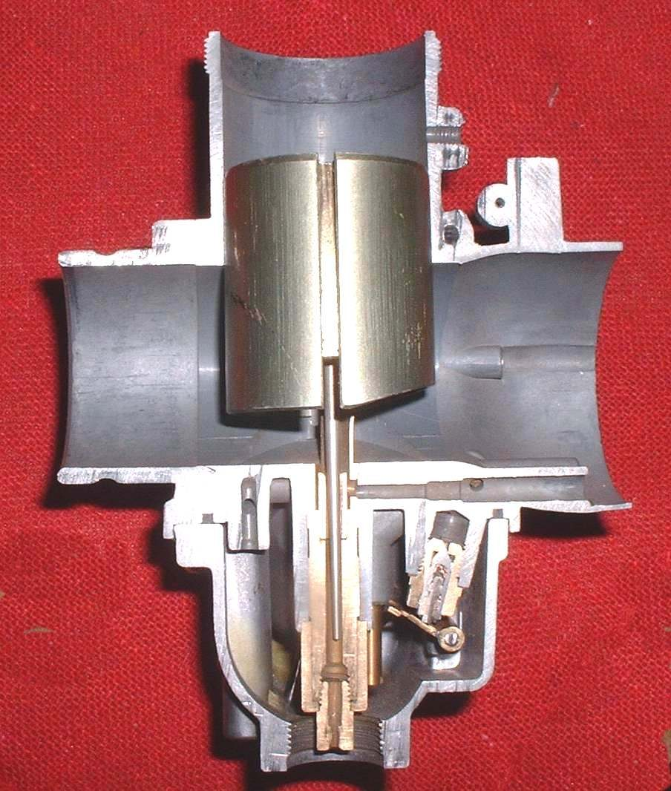

The jet needle is a tapered rod fixed in the throttle slide. Its lower end goes into the needle jet. As the slide lifts, the needle rises and more fuel passes. It has the main control of the mixture from about one fifth to four fifths throttle. It is the most useful tuning part of a slide carburettor, and it is cheap.
What it does
The taper shape sets how much fuel flows at each opening. A simple needle has one taper. Others have several. Grooves at the top take a clip. Moving the clip to a groove lower on the needle raises the needle and richens the mixture. Moving it higher lowers the needle and leans the mixture.
Signs it is worn or failing
- Hesitation or flat spot in the middle of the throttle range: Hesitation when opening the throttle, Flat spot in acceleration.
- A worn needle or needle jet gives a rich mixture that cannot be tuned out.
- A bent needle sticks in the slide.
When to replace it
Replace a bent, scored or worn needle. If tuning needs a different taper, a needle of a different part number may be used.
What to match when buying
- Carburettor make and model, and the needle code stamped on the needle.
- Number of grooves. Many newer bikes have a single groove, so a clip change cannot lean the mixture. A needle of the same size with several grooves may be available. A small washer under the clip raises the needle and richens the mixture.
- The way it is held: clip, small screw or plate.
Fitting notes
- Note the groove in use before removing the needle.
- Fit the slide the right way round. A slide fitted backwards can jam the throttle open.
- See Move the jet needle clip to change the mid-range mixture.